Branded certificates in minutes, without leaving the dashboard.
The brief cut both ways: user goal - build certificates quickly and independently; business goal - boost DIY adoption and reduce support dependency.
“A blank canvas is intimidating. A great starting point is basically an invitation.”
Three interviews, one very consistent story.
User interviews. I interviewed three HR administrators:
- Formatting was the top pain - getting layouts right in Word or Canva ate up time and patience.
- Time delays: a “simple certificate” routinely turned into an afternoon.
- They preferred a simple step-by-step creation flow over advanced, free-form design tools.
Competitive benchmarking. I reviewed Canva, Xoxoday and Bonusly - and found a clear gap for an integrated, branded, DIY certificate tool in the B2B HR space.
Not another canvas editor - a guided three-step wizard.
Select Template → Fill Fields → Preview & Export. That single reframe removed most of the anxiety. Initial lo-fi explorations tested the flow before any visual polish:
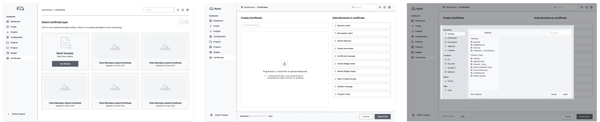
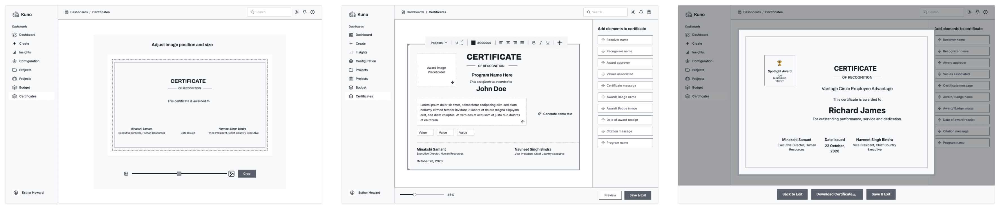
Key design moves that survived from wireframe to ship:
- Real-time preview pane - see the change instantly; what you see is exactly what exports.
- Drag-and-drop logo positioning - brand placement without fiddly coordinates.
- Brand-first customisation - fonts and colours scoped to the company's brand, so it's hard to make something ugly.
- Export as PDF, Save as Template, Duplicate Certificate - the second certificate takes seconds, not another afternoon.
The shipped flow, screen by screen.
Template gallery, guided editing with live preview, and export. Click any screen to view it fullscreen.
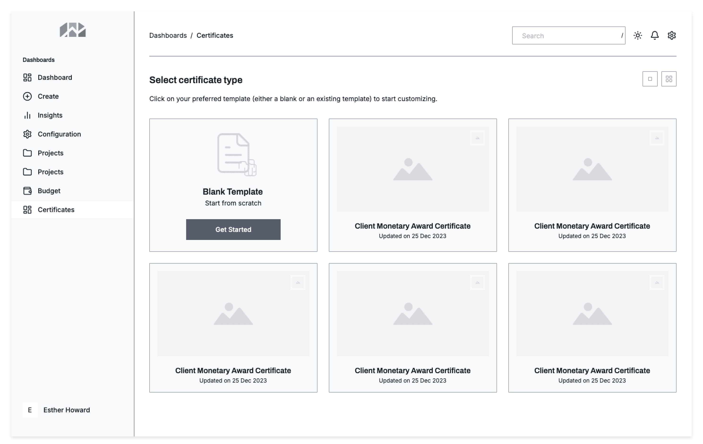
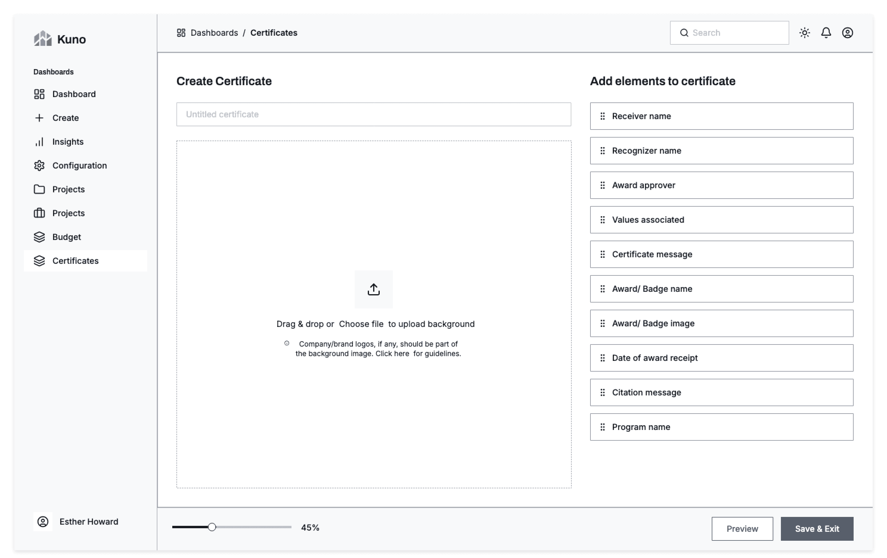
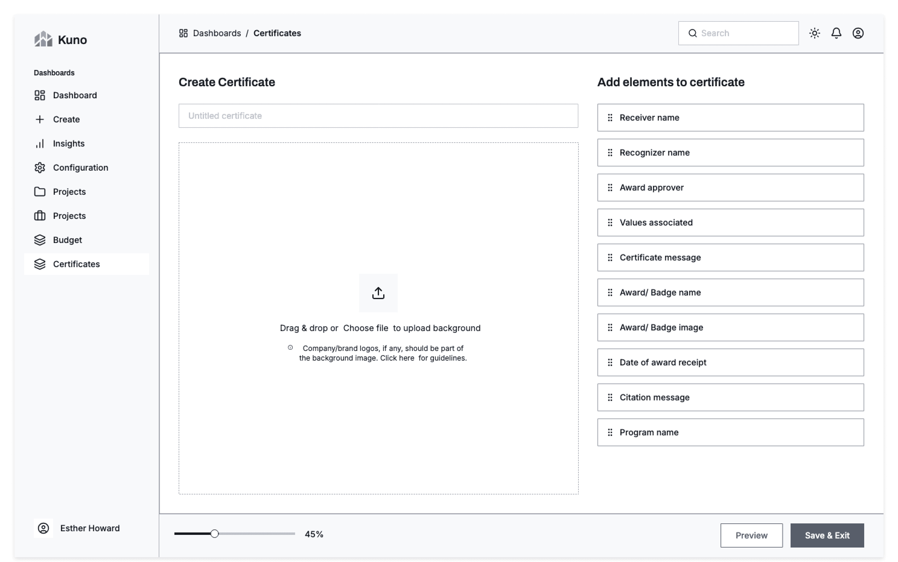
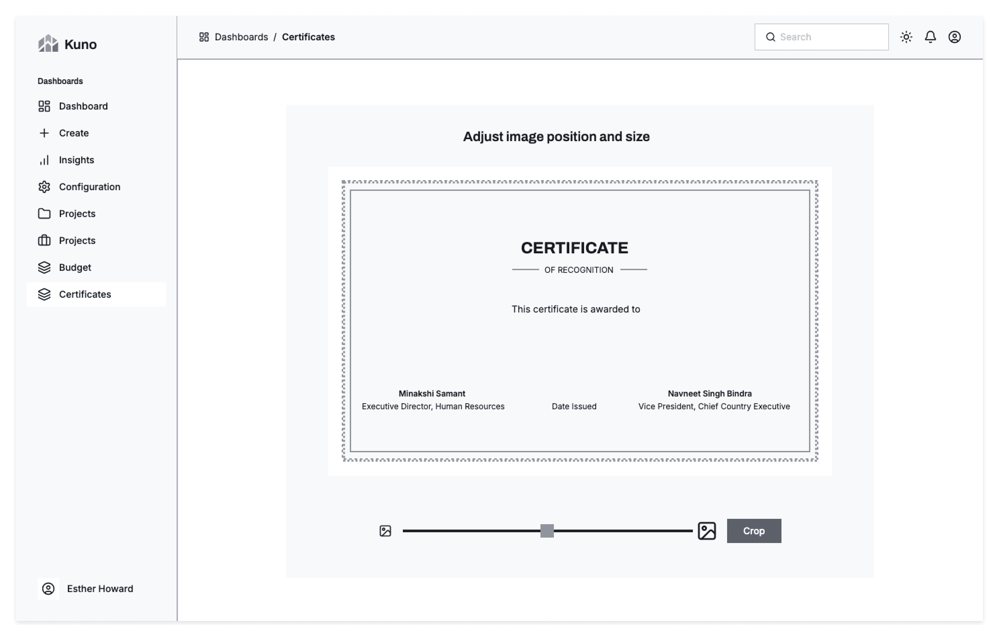
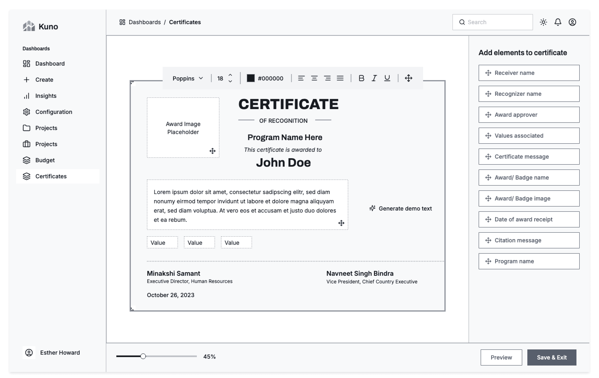
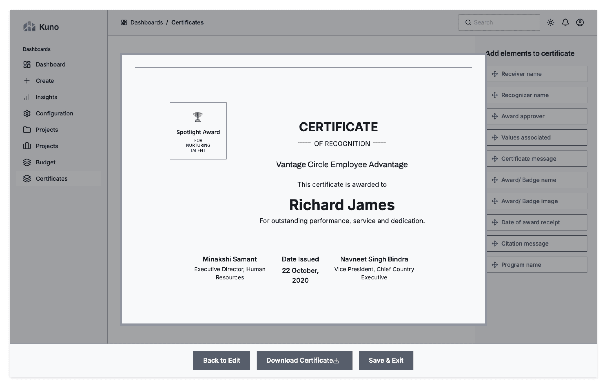
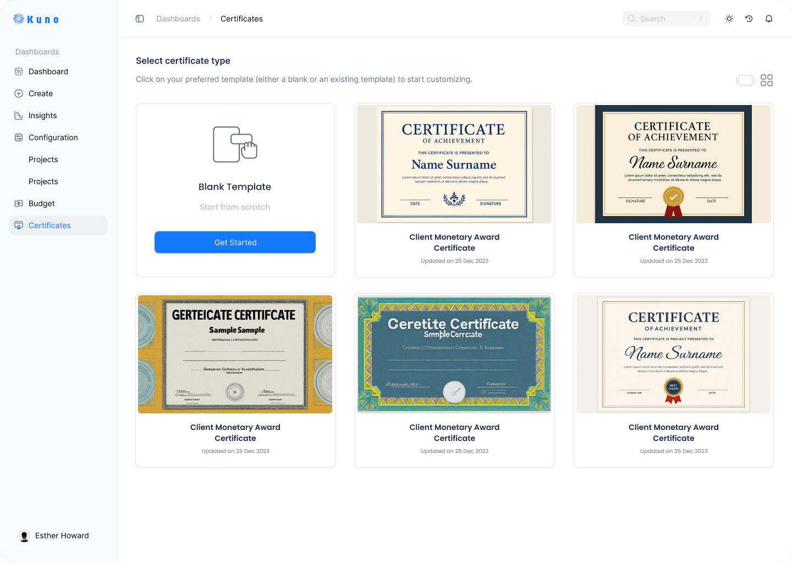
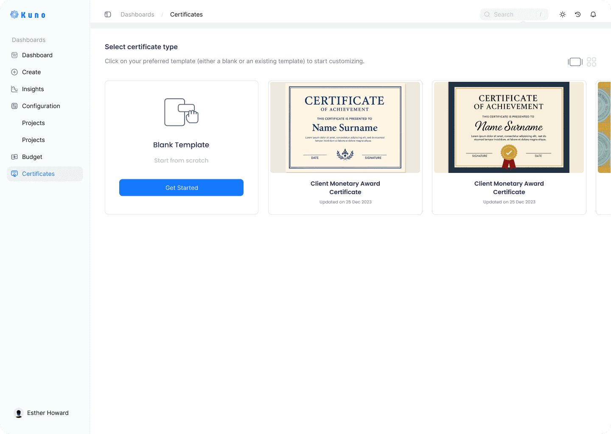
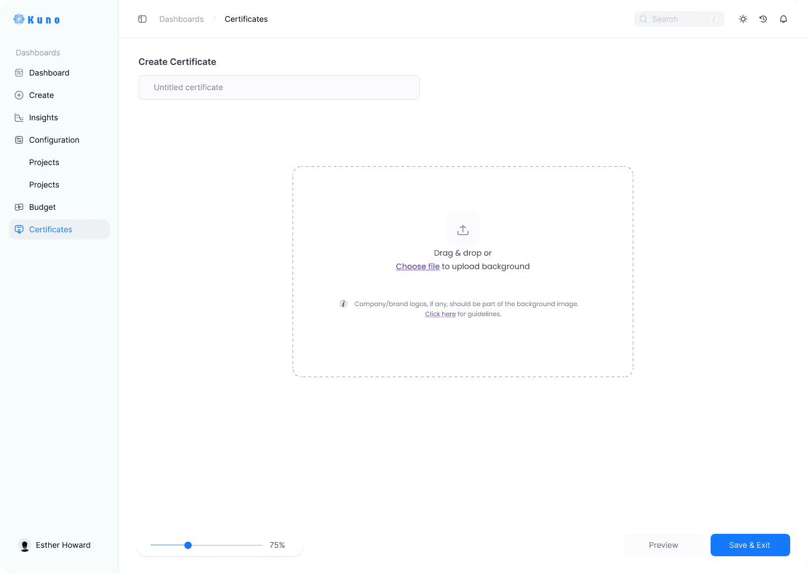
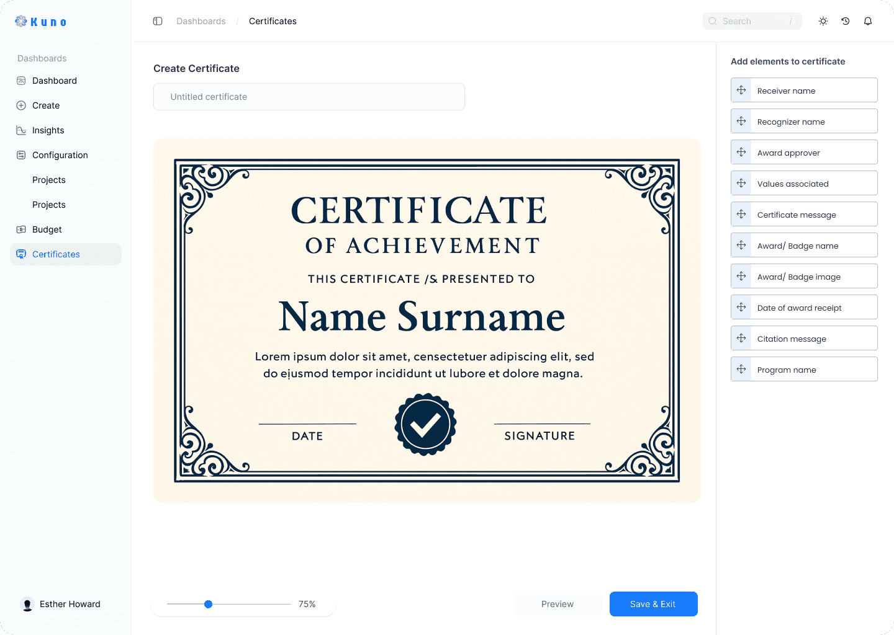
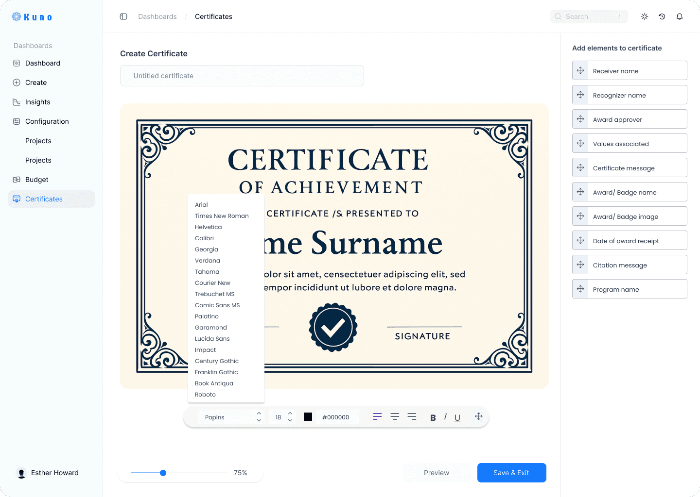
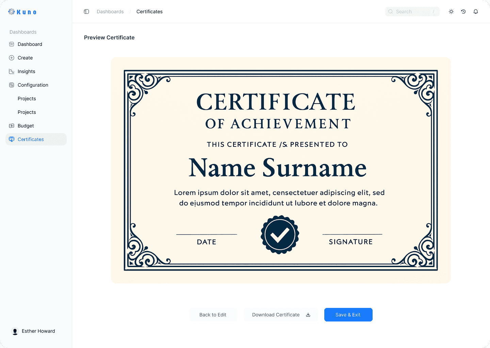
Tested with HR, adopted in weeks.
Internal testing with two HR representatives caught the last rough edges - we added tooltips and improved preview clarity before launch. Then the numbers spoke: